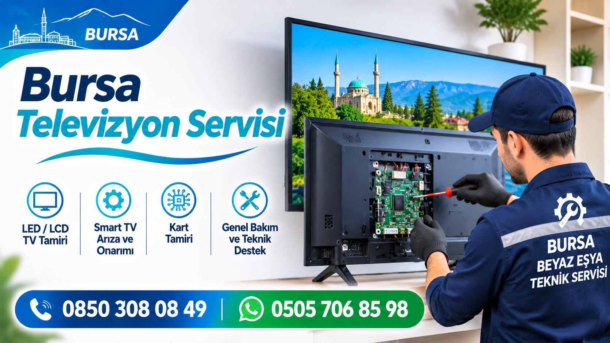

Bursa Televizyon Servisi
Bursa genelinde televizyon arızaları için arıza tespiti ve onarım desteği sunuyoruz. Görüntü gelmemesi, ses sorunları, ekran problemleri ve televizyonun açılmaması gibi durumlarda servis talebinizi bize iletebilirsiniz.
0850 308 0849 — Bizi Arayın WhatsApp: 0505 706 8598Bursa TV Tamiri ve Televizyon Onarım Desteği
Televizyonlar günlük yaşamda sık kullanılan elektronik cihazlardır. Zamanla görüntü, ses, ekran veya bağlantı sorunları ortaya çıkabilir. Bursa televizyon servisi arayan kullanıcılar için cihazın yaşadığı sorunun belirlenmesi ve uygun onarım seçeneklerinin değerlendirilmesi önemlidir.
Yıldırım Soğutma Teknik Servis olarak televizyonunuzdaki sorunu dinliyor, cihazın marka ve model bilgilerine göre servis süreci hakkında bilgi veriyoruz. Arıza tespiti ve onarım koşulları cihazın durumuna göre değerlendirilir.
Sık Karşılaşılan Televizyon Arızaları
Televizyon açılmıyor
Televizyonun hiç açılmaması, bekleme ışığının yanmaması veya açma komutuna tepki vermemesi farklı elektriksel ya da elektronik sorunlardan kaynaklanabilir.
Televizyonda ses var görüntü yok
Ses duyulmasına rağmen ekranda görüntü oluşmaması ekran aydınlatması, panel veya görüntü devreleriyle ilgili bir soruna işaret edebilir.
Televizyonda görüntü yok ve ses de gelmiyor
Cihazın hiç görüntü veya ses vermemesi durumunda güç ve elektronik devrelerin kontrol edilmesi gerekebilir.
Televizyon ekranında çizgiler var
Ekranda dikey veya yatay çizgiler, lekeler ya da görüntü bozulmaları görülüyorsa panel ve görüntü bağlantılarının değerlendirilmesi gerekir.
Televizyon kendi kendine kapanıyor
Televizyonun kullanım sırasında kapanması veya yeniden başlaması güç, ısınma ya da elektronik bileşenlerle ilgili olabilir.
Televizyonda ses problemi
Sesin hiç çıkmaması, kesilmesi veya bozuk duyulması durumunda cihazın ses ayarları ve ilgili elektronik bileşenleri kontrol edilmelidir.
Televizyon Servis Talebi Nasıl Oluşturulur?
- Telefonla bizi arayın veya WhatsApp üzerinden mesaj gönderin.
- Televizyonunuzun marka ve modelini belirtin.
- Yaşadığınız arızayı mümkün olduğunca açık şekilde anlatın.
- Servis uygunluğu, arıza tespiti ve onarım koşulları hakkında bilgi alın.
İşlem öncesinde arıza tespit ve onarım koşulları hakkında bilgi alabilirsiniz.
Televizyon Servisi İçin Arayın WhatsApp'tan Servis TalebiBursa Genelinde Televizyon Servisi
Bursa'nın farklı ilçelerinden televizyon arıza ve onarım taleplerinizi alıyoruz. Servis uygunluğu ve bulunduğunuz bölge için bizimle iletişime geçebilirsiniz.
Hizmet bölgelerimiz:
- Osmangazi televizyon servisi
- Nilüfer televizyon servisi
- Yıldırım televizyon servisi
- Gürsu televizyon servisi
- Kestel televizyon servisi
- Mudanya televizyon servisi
- Gemlik televizyon servisi
- İnegöl televizyon servisi
Bulunduğunuz ilçede servis hizmeti uygunluğunu öğrenmek için bizi arayabilirsiniz.
Televizyon Servisi Hakkında Sık Sorulan Sorular
Bursa'da televizyon tamiri için nasıl ulaşabilirim?
0850 308 08 49 numaralı telefonumuzdan arayabilir veya 0505 706 85 98 WhatsApp hattımıza mesaj gönderebilirsiniz.
Televizyonum açılmıyorsa ne yapmalıyım?
Öncelikle elektrik bağlantısını ve prizi kontrol edebilirsiniz. Sorun devam ediyorsa cihazı zorlamadan servis desteği almanız önerilir.
Televizyon tamir ücreti neye göre belirlenir?
Ücret; televizyonun marka ve modeline, arızanın türüne ve gerekli işleme göre belirlenir. İşlem öncesinde fiyat bilgisi alabilirsiniz.
Hangi televizyon markalarına servis veriyorsunuz?
Televizyonunuzun marka ve modelini bize iletin. Cihazınız için servis uygunluğu hakkında bilgi verelim.
WhatsApp üzerinden servis talebi oluşturabilir miyim?
Evet. Televizyonunuzun marka ve modelini, arızasını ve bulunduğunuz ilçeyi WhatsApp üzerinden iletebilirsiniz.
Diğer Teknik Servis Hizmetlerimiz
Televizyon servisinin yanı sıra diğer teknik servis hizmetlerimiz hakkında da bilgi alabilirsiniz.
Yıldırım Soğutma Teknik Servis İletişim
Bursa televizyon servisi ve diğer teknik servis hizmetlerimiz hakkında bilgi almak için bize ulaşabilirsiniz.
Telefon: 0850 308 08 49
WhatsApp: 0505 706 85 98
Hemen Arayın WhatsApp'tan Yazın